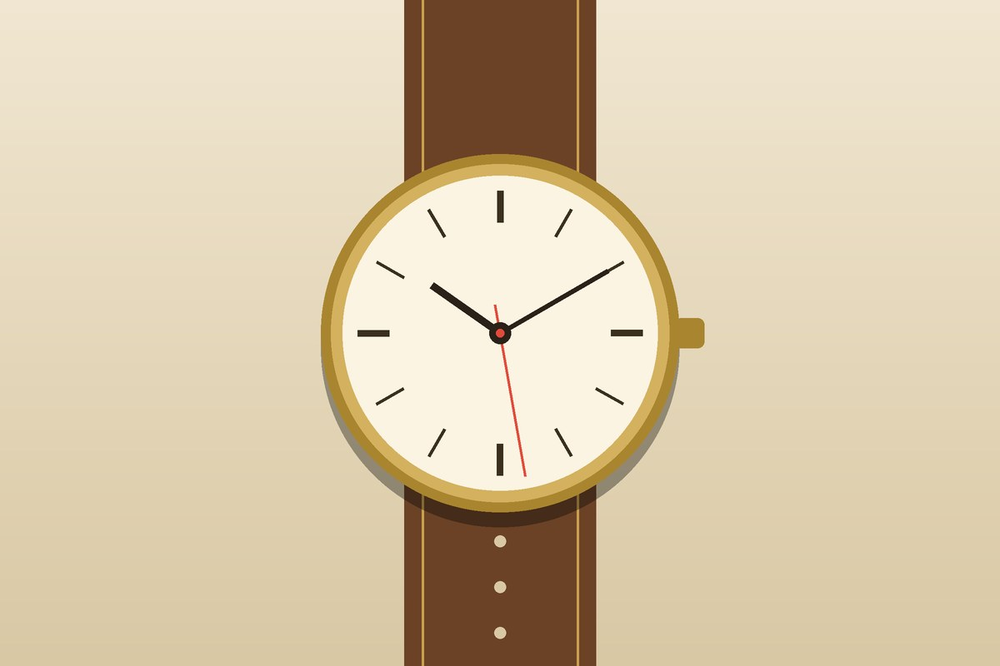
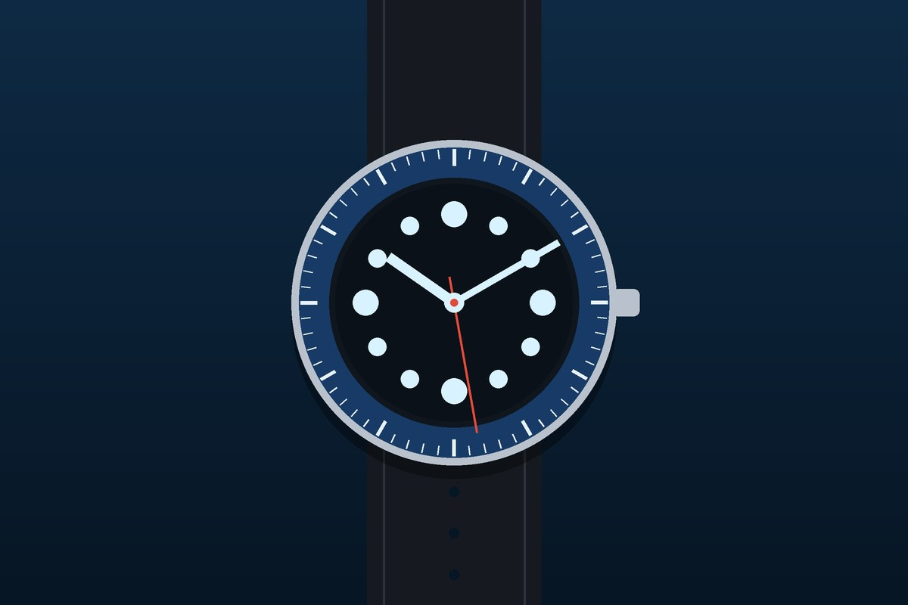
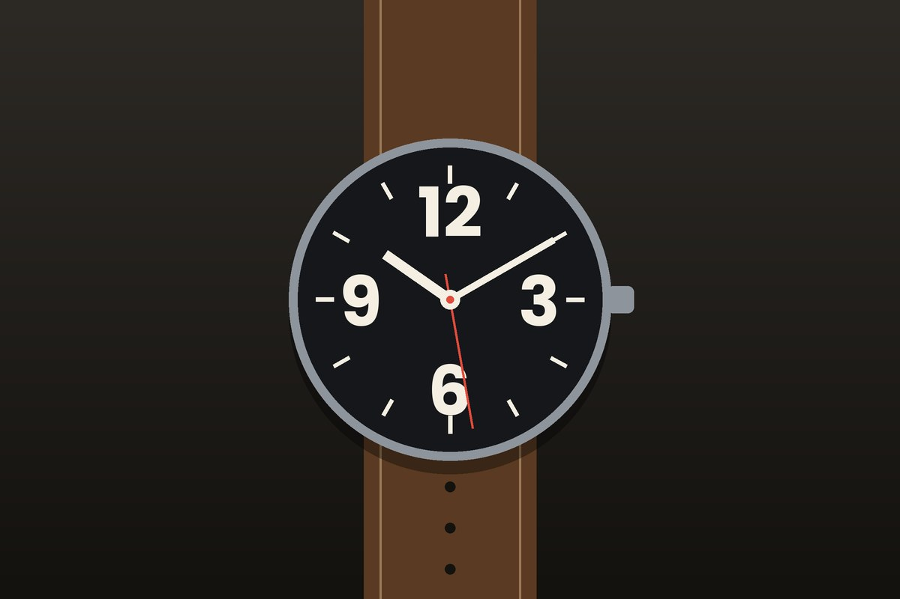
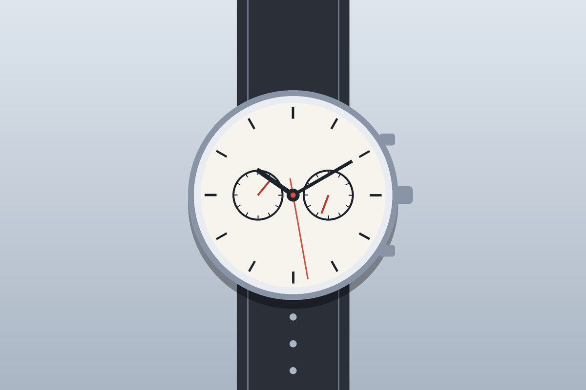
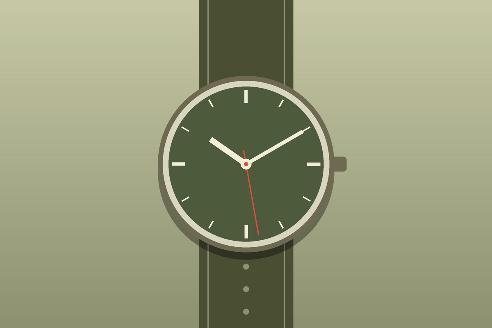
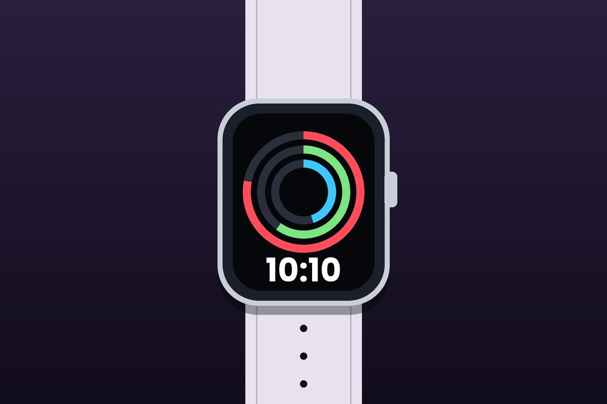

Лаб 6 · CSS3 animation
Бугуйн цагны цомог
Зургийн карт дээр хулганаа аваачвал эсвэл «Дэлгэрэнгүй» товчийг дарвал 3D байдлаар эргэж, цагны тухай мэдээлэл харуулна.
Цагны цомог
Зургийн цомгоос зургаан төрлийн цагийг сонго. Карт бүрийн ард тухайн төрлийн товч үзүүлэлт байна.
-

Dress watch
Dress watch
Нимгэн, энгийн, гоёмсог. Албан ёсны хувцастай зүүнэ.
- Хайрцаг
- 34–40 мм
- Механизм
- Механик / кварц
- Ус тэсвэр
- 3 ATM
-

Diver
Diver
Усанд шумбахад зориулсан, эргэдэг бөгжтэй, гэрэлтэх тэмдэгтэй.
- Хайрцаг
- 40–44 мм
- Механизм
- Автомат / кварц
- Ус тэсвэр
- 20 ATM хүртэл
-

Pilot
Pilot
Том тоотой, хол зайнаас ч хялбар уншигдах дүрстэй.
- Хайрцаг
- 40–46 мм
- Механизм
- Автомат
- Ус тэсвэр
- 6 ATM
-

Chronograph
Chronograph
Секундомер функцтэй, хажуугийн хоёр товчтой.
- Хайрцаг
- 38–44 мм
- Механизм
- Автомат / кварц
- Ус тэсвэр
- 10 ATM
-

Field watch
Field watch
Энгийн, бат бөх, гадаа явахад зориулсан цэргийн хэв маягтай.
- Хайрцаг
- 36–42 мм
- Механизм
- Механик / кварц
- Ус тэсвэр
- 10 ATM
-

Smartwatch
Smartwatch
Алхалт, зүрхний хэмнэл хэмжиж, мэдэгдэл хүлээн авна.
- Дэлгэц
- 1.5–1.9 инч
- Цэнэг
- 1–7 хоног
- Ус тэсвэр
- 5 ATM
Видео
Секундын заагчийн эргэлтийг харуулсан богино клип. Монгол хадмал (caption) байгаа.
Цагийн бүсийн эхлэл
Лондонгийн Гринвичийн ажиглалтын төв нь 0° уртрагийг заадаг. Дэлхийн цагийн бүсүүдийг эндээс тоолдог.